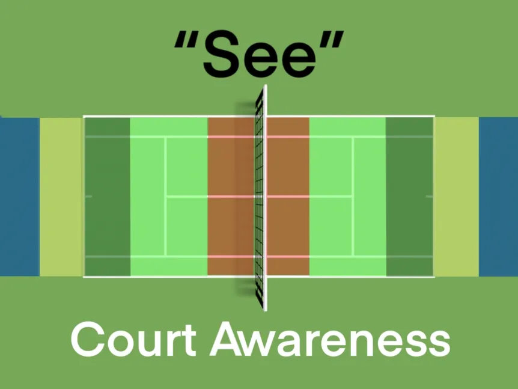

Previous: Contact Point | 🏠 Famous Coaches Home | Next: My Unit Turn Revelation
Court Awareness
Comprehensive unified tennis knowledge base — Fundamentals, Stroke Analysis, Reference Library, and more
Court Awareness
Ean Meyer
Court Awareness

CA | V1: Introduction to the 5 Zones
CA | V2: Introduction to the Segmented Swing
CA | V3: Zone 5 – Tactics Explained
CA | V4: Zone 5 – Tactics with Player
CA | V5: Zone 5 – Segmented Swing with Player
CA | V6: Zone 4 – Tactics Explained
CA | V7: Zone 4 – Tactics with Player
CA | V8: Zone 4 – Segmented Swing with Player
CA | V9: Zone 3- Tactics Explained
CA | V10: Zone 3 – Tactics with Player
CA | V11: Zone 3 – Segmented Swing with Player
CA | V12: Zone 2 – Tactics Explained
CA | V13: Zone 2 – Tactics with Player
CA | V14: Zone 2 – Segmented Swing with Player
CA | V15: Zone 1 – Tactics Explained
CA | V16: Zone 1 – Tactics with Player
CA | V17: Zone 1 – Segmented Swing with Player
CA | V18: Combined Zone Tactics with Player
CA | V19: Introduction to Tactic and Technique Combined
CA | V20: Integrate Tactic and Technique with Player Zone 5
CA | V21: Integrate Tactic and Technique with Player Zone 4
CA | V22: Integrate Tactic and Technique with Player Zones 4/3
CA | V23: Integrate Tactic and Technique with Player Zone 2
CA | V24: Integrate Tactic and Technique with Player Zone 1
CA | V25: Runway Introduction
CA | V26: Runway Progression with player
CA | V27: Ideal Recovery Position Awareness
CA | V28: Ideal Recovery Positions with Player
Court Awareness | V1: Introduction to the 5 Zones
In the first video of the “See” package, Tennis.Pro introduces the “5 Zones”, a method of identifying and reacting as such, to the ball. The aforementioned 5 zones are thus representing the different areas on court. Each area means somethings different: there’s the deep zone, the neutral zone, and the kill zone, to name three of the five. Listen closely to know what to do in each!
Court Awareness | V2: Introduction to the Segmented Swing
In this video, Tennis.Pro introduces the concept of the “Segmented Swing”, an important idea that goes hand in hand with the first video, “Introduction to the 5 Zones”. The swing of your racquet is often overlooked in tennis. Here, learn about the impact your backswing and follow-through have on your game!
Court Awareness | V3: Zone 5 – Tactics Explained
Now, we explain the tactics that correlate with Zone 5, the deep zone, in detail. What do you do when the ball pushes you back to the fence? How do you play the ball so you can recover most efficient and effectively? Pay close attention, we’ll answer all your questions.
Court Awareness | V4: Zone 5 – Tactics with Player
Now that the tactics for Zone 5 have been explained, it’s time to apply it on court. Lauren, our 10 year old, learns to combat balls in Zone 5 step-by-step. First she calls the type of ball, then she shadows, and then she follows our progressions in ingraining this reaction in her game.
Court Awareness | V5: Zone 5 – Segmented Swing with Player
Still in the Deep Zone, Tennis.Pro now moves on from the tactics to the swing. As mentioned before, the swing of a player is an important but often overlooked aspect of tennis. In Zone 5, a player is going defense, and therefore should take her backswing five windows and follow through six windows.
Court Awareness | V6: Zone 4 – Tactics Explained
Now we’re moving into Zone 4, the neutral zone. This is the most important zone on the court! As the zone where most tennis players spend most of their game on, there are many things to take note of, such as what shot is most optimal to set yourself up for victory.
Court Awareness | V7: Zone 4 – Tactics with Player
Here, we apply the tactics we just learned in the previous video on what to do in this important zone. Tennis.Pro trains our player to make the decision to either change the direction of the ball and thus control the court, or “stay in it”, maintaining neutral shots in the game. Watch as we go through progressions to ingrain this responsive habit in our game!
Court Awareness | V8: Zone 4 – Segmented Swing with Player
To be in Zone 4 means to respond with a particular swing. Take the racquet back a maximum of 4 windows and follow through 6 windows. The idea is to minimize the action so there can be maximum effect for the shot. As you progress from Zone 5 to Zone 4, then there is most likely less time to take the racquet back.
Court Awareness | V9: Zone 3- Tactics Explained
Zone 3 is the middle of all 5 zones and is a place for opportunity. This is where the player can challenge either their opponent’s movement, weakness, or both. Many times, people make the choice to play neutrally, a tactic that might cause them to lose out on an opportunity to strike.
Court Awareness | V10: Zone 3 – Tactics with Player
Once again, we train our player as we would in any other zone through a set of progressions. Shadow and call the action, self feed and call the action, feed the ball and call the action, always calling the action. Especially in a zone where it’s smart to play aggressive, we have our player call out “Do Something!” to trigger the response so that she remembers to retaliate hard to the opponent in Zone 3.
Court Awareness | V11: Zone 3 – Segmented Swing with Player
While in Zone 3, your swing should not be like your typical 4-window backswing and 6-window follow-through from Zone 4. When in Zone 3, in order to attack, you would need to have a 3-window backswing and 6-window follow-through for the best timing and results. Watch the video to improve your game through swing length in Zone 3!
Court Awareness | V12: Zone 2 – Tactics Explained
Zone 2 is the biggest zone on the court, and also the biggest opportunity to challenge the baseline and move into Zone 1. But there are still some things that you should be aware of, for instance: where to attack, where to go, where not to go. Here we can see how we can use Zone 2 as a great opportunity to move to Zone 1.
Court Awareness | V13: Zone 2 – Tactics with Player
Here in this video, we learn how to apply the tactics we learned in the previous video to the play. By calling out shots and executing them, we train our player to have the mindset of “Go all the way” for Zone 2. Follow along as we learn how we play the balls in this zone!
Court Awareness | V14: Zone 2 – Segmented Swing with Player
As we move from Zone 3 into Zone 2, the ball will come in faster. When it does, you should use the appropriate shot for the swing. Take your racket back 2 segments and have a 6-window follow-through for the best results.
Court Awareness | V15: Zone 1 – Tactics Explained
As we move on to Zone 1, also known as the “Red Zone”, you want to put the ball away. You want to be as aggressive as possible and aim for the direction of your attack. As you watch, you will understand what to do when you are in this position.
Court Awareness | V16: Zone 1 – Tactics with Player
From the information we learned in the last video, now we do it with players by training to call “Kill!” every time we move in, in progressions. The verbal signal, “Kill!” triggers our mindset when moving in. Eventually, this develops into a good habit in competition.
Court Awareness | V17: Zone 1 – Segmented Swing with Player
In this video we explain the swing segments that correlate with Zone 1 with a player. While we talk about segments in the swing, keep in mind of its importance. It’s critical to understand the necessity of having a simple backswing especially in the Kill Zone.
Court Awareness | V18: Combined Zone Tactics with Player
After learning the tactics of every zone and applying each Zone Play with a player, we can finally combine all the strategies we’ve learned. Like all our other videos with players, we apply the learning in progressions. Once the player is comfortable with the basics, we speed up and challenge more with all the zones.
Court Awareness | V19: Introduction to Tactic and Technique Combined
We need understand the different decisions to make in different areas of the court. We also need understand how far to take the racquet back and how far the racquet should come forward. Now, we start to combine tactic and technique in our game.
Court Awareness | V20: Integrate Tactic and Technique with Player Zone 5
We teach our players to play in Zone 5 with both tactic and technique combined through progressions. There will be moving in between zones, training to play in each with fast reactions. Understanding the importance of progressions is vital in tennis training, so don’t skip any!
Court Awareness | V21: Integrate Tactic and Technique with Player Zone 4
Now we’re moving on to applying Tactic and Technique in Zone 4. Zone 4 is the most important zone; understanding to make smart decisions from Zone 4 will win yourself rallies. However, if you make bad decisions, you will most likely get attacked.
Court Awareness | V22: Integrate Tactic and Technique with Player Zones 4/3
In this video, we will combine Zones 4 and 3. Remember, in Zone #4, the tactic is to “Stay In It” with a 4-window backswing and 6-window finish. In Zone 3, the tactic would be “Do Something” with a 3-window backswing and 6-window finish.
Court Awareness | V23: Integrate Tactic and Technique with Player Zone 2
This video is about combining Tactic and Technique in Zone 2 with a player. We need to understand that Zone #2 is the “Bright Green Zone,” which means “Go all the way”. That means you have to keep going and cannot back up anymore. Follow through your shot into the kill zone!
Court Awareness | V24: Integrate Tactic and Technique with Player Zone 1
Moving on, we will take a look at Zone 1, the “Kill Zone”. Zone 1 is not the place to keep the ball in play from, nor the rally zone. In Zone 1, you have to have the mindset to kill: if you can start having that mindset starting from a young age, that would be a great advantage.
Court Awareness | V25: Runway Introduction
This is the introduction to the 3 runways. There is Runway A, Runway B, and Runway C. Unlike the zones we’ve talked about, these runways, are columns are good indicators of what to do in play.
Court Awareness | V26: Runway Progression with Player
In this video, we will show how to use the runways in progressions with a player. This drill is to see which runway you will hit the ball from. Like in any other video, we train our players in progressions by first making the ball predictable, then increasingly unpredictable.
Court Awareness | V27: Ideal Recovery Position Awareness
When players recover from a shot, they generally recover to the middle of the baseline. This is a common mistake, although easily remedied. To find the Ideal Recovery Position, pinpoint the middle point of the two extreme angles you can make. Don’t get it yet? Watch to learn more!
Court Awareness | V28: Ideal Recovery Positions with Player
Now that we’ve learned about the ideal recovery position, it’s now time to instruct the concept with a player. With progressions, we shadow first of all, practicing getting to the midpoint, setting up, and swinging. These progressions will eventually become habit that lets you react to the right ball and position yourself efficiently.
The END

Ean Meyer, a professional tennis coach since 1987. Over the years, I’ve worked with every level of player from beginner to professional, coaching tennis for over 25 years and have worked with many different levels of juniors and adults. In this time I have worked at high performance academies including Bollettieri’s, Seguso-Bassett, Evert Tennis Academy and most recently, the Harold Solomon Tennis Institute. I’ve been published in tennis magazines in Brazil, Venezuela, Italy, South Africa and the U.S. and have conducted seminars for coaches in different countries. My coaching philosophy is very simple: Develop strong Fundamentals in 4 areas – Technical, Tactical, Mental and Physical.
Visit his website at: https://eanmeyertennis.com and https://tennis.pro/
Source: tennisplayer.net archive — Court Awareness.docx (John Yandell teaching library, 2002-2022). Extracted and rendered as HTML for Tennis Future Lab.